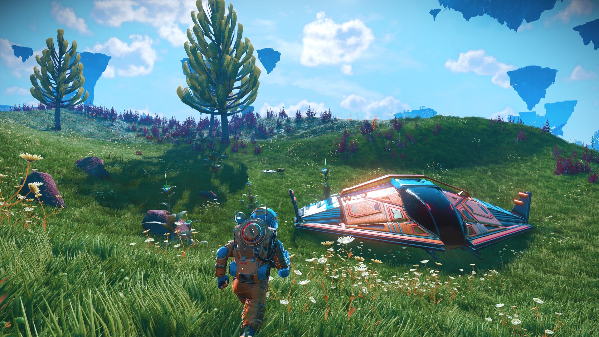
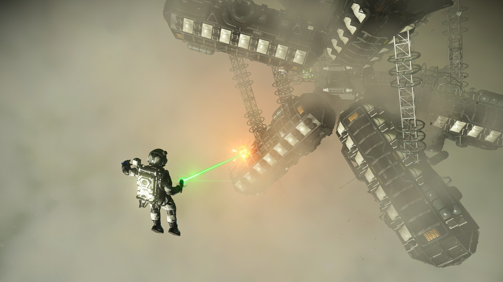
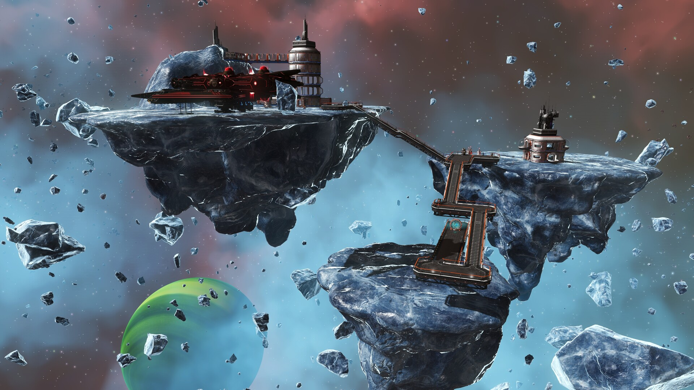
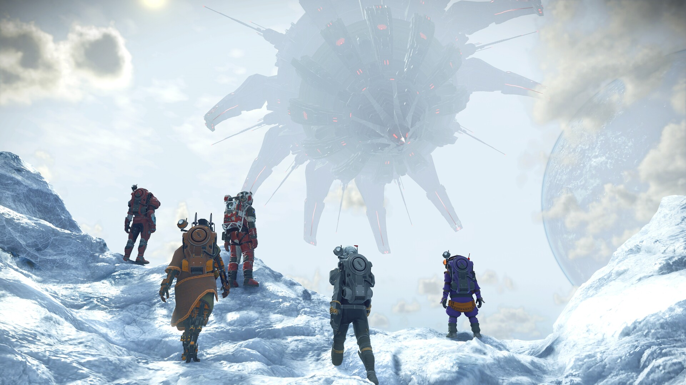
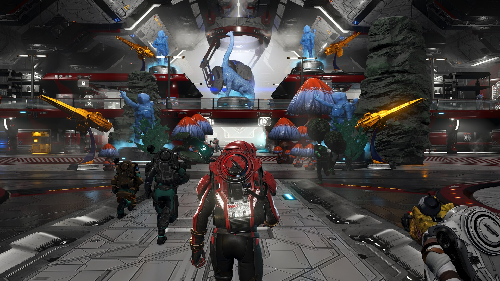
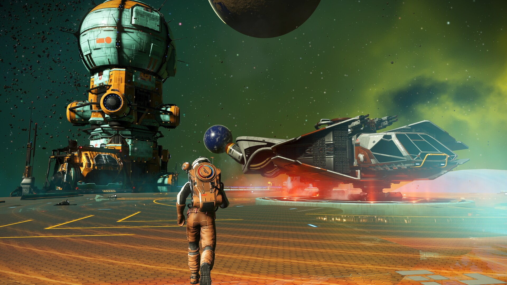

🪐
Exploración
Viaja entre estrellas, aterriza en mundos distintos y descubre formas de vida que nadie ha visto antes.
Un universo infinito, generado proceduralmente, esperando a que lo explores.
Comenzar el viajeFan page no oficial · Sin relación con Hello Games

No Man's Sky es un juego de exploración y supervivencia desarrollado y publicado por el estudio independiente Hello Games. Despiertas como un viajero solo, junto a una nave averiada, en un planeta desconocido. Desde ahí, todo depende de ti: reparar tu nave, despegar y explorar una galaxia entera.
El universo se genera de forma procedural: existen más de 18 quintillones de planetas, cada uno con su propio ecosistema, con flora y fauna únicas. Puedes aterrizar en cualquiera, minar recursos, catalogar criaturas y plantas para ganar créditos, comerciar con razas alienígenas o pelear contra piratas y centinelas.
Detrás de todo hay un misterio: Atlas, una entidad en el centro de la galaxia. Seguir su rastro es la historia principal, pero puedes ignorarla y simplemente vivir a tu ritmo: construir bases, criar mascotas, coleccionar naves o jugar con amigos en línea.
Todo lo que haces en el juego gira alrededor de estas cuatro ideas.
Viaja entre estrellas, aterriza en mundos distintos y descubre formas de vida que nadie ha visto antes.
Mina recursos, fabrica equipo y mantén a raya el clima extremo, la radiación y la falta de oxígeno.
Enfréntate a piratas espaciales, centinelas y criaturas hostiles, en tierra y en batallas entre naves.
Compra y vende recursos en estaciones espaciales, mejora tu nave y crea tu propia fortuna.
Cada cierto tiempo, todos los jugadores colaboran en una misma meta. Aquí ves cómo va la actual, casi en tiempo real.
Datos de la comunidad (Assistant for No Man's Sky), no oficiales de Hello Games. Se actualizan cada minuto.
Haz clic en una imagen para verla en grande.






SVS es nuestra pequeña comunidad de jugadores, y con orgullo pertenecemos a la Royal Space Society. Aquí compartimos las capturas de nuestras propias aventuras por la galaxia.
Elige un jugador para ver su galería y haz clic en una imagen para verla en grande, con una breve explicación de lo que muestra.
Cargando capturas…
Las expediciones son eventos de temporada, por tiempo limitado, en los que todos los viajeros empiezan en el mismo lugar con una nave y equipo predefinidos y avanzan por fases e hitos. Al completarlas se ganan recompensas exclusivas (naves, trajes, mochilas, carteles) que se canjean gratis en cualquier partida desde la Anomalía Espacial. Desde 2021 ya van 23: elige una abajo o usa las flechas.
Cargando expediciones…
Desde su lanzamiento, Hello Games ha seguido ampliando y mejorando el juego con actualizaciones gratuitas.